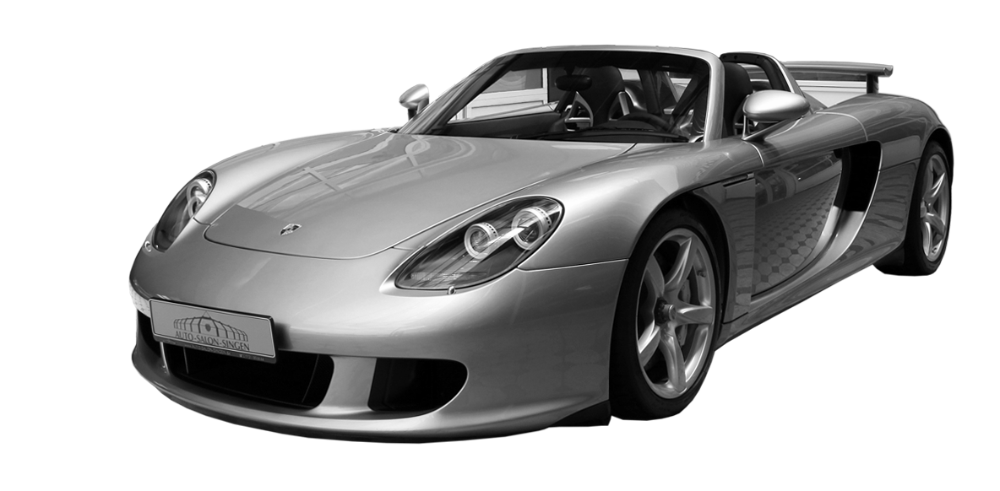

Porsche Performance Vehicles
98% Recommend

porsche 911 gt3 rs
The Porsche 911 GT3 is a two-door, rear-mounted, longitudinally mounted, flat-six engine, rear-wheel drive, sports coupé produced by German manufacturer Porsche AG since 1999. It is a more radical version of the standard naturally aspirated 911.
94% Recommend
Porsche Carrera GT
The Porsche Carrera GT is a super sports car with a longitudinally mounted mid-rear engine and rear-wheel drive, with a two-seat two-door Targa body. In 1999 it was to have a turbocharged straight-six engine, but the project was postponed until 2000 to develop a naturally aspirated V10 engine.